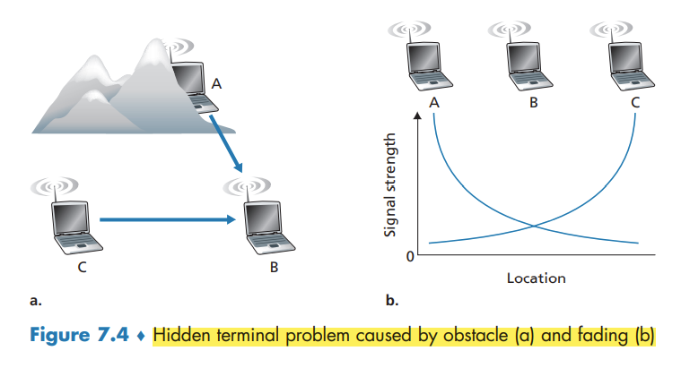

↩️ ttm4100
Wireless Links and Network Characteristics
Wireless links differ from their wired counterparts in a number important ways:
- Decreasing signal strength.
- Interference from other sources.
- Multipath propagation.
Wireless link protocols (such as the 802.11 protocol) employ not only powerful CRC error detection codes, but also link-level reliable-data-transfer protocols that retransmit corrupted frames.
The signal-to-noise ratio (SNR) is a relative measure of the strength of the received signal (i.e., the information being transmitted) and this noise. typically measured in units of decibels (dB). a larger SNR makes it easier for the receiver to extract the transmitted signal from the background noise.
- For a given modulation scheme (the process of converting data into radio waves), the higher the SNR, the lower the BER.
- For a given SNR, a modulation technique with a higher bit transmission rate (whether in error or not) will have a higher BER.
- Dynamic selection of the physical-layer modulation technique can be used to adapt the modulation technique to channel conditions.

CDMA (Ikke pensum!)
In Chapter 6, we described three classes of medium access protocols: channel partitioning, random access, and taking turns. Code division multiple access (CDMA) belongs to the family of channel partitioning protocols.